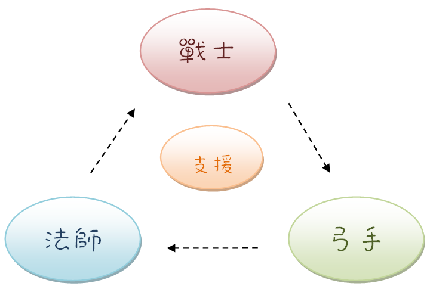

HP |
初始為50 上限50 每個準備階段都會獲得2HP回復 |
MP |
初始為0 上限30 每個準備階段時都會獲得 劍士+1MP 弓手+1MP 魔法師+2MP 支援師+3MP |
屬性 |
分為物理及魔法，攻擊時要對應相對的屬性防禦值 |
物理傷害 |
攻擊屬性為物理 |
魔法傷害 |
攻擊屬性為魔法 |
真實傷害 |
直接損耗HP |
普通攻擊 |
按照角色卡上寫的數值進行攻擊 |
祭品 |
指為換來效果而棄置的手牌 |
格檔 |
減少普攻傷害 |
轉職 |
每隻角色都有第一職及第二職(可參考下底的編碼) 初始一定為一職 在準備階段時可使用15MP由第一職轉為第二職 (亦可再使用15MP由第二職轉回第一職) |
職業 |
一共分為四種: 劍士 物防較高，能夠戰防衛優勢對抗弓手 弓手 以速度取勝，以普通攻擊為主打壓法師 魔法師 使用技能為主，以速度慢換取高輸出，能對抗高物防底魔防的戰士 支援師 以輔助團體 相剋圖：  |
順位 |
根據角色的AC決定行動次序 |
卡組 |
指可抽的卡牌，一共有150張 |
棄置區 |
每當手牌被使用/放棄時就會扔入棄置區 |
已方陣營 |
已方所有的角色 |
敵方陣營 |
敵方所有的角色 |